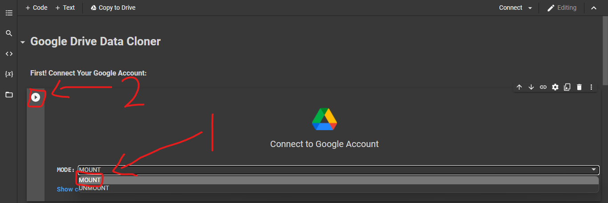
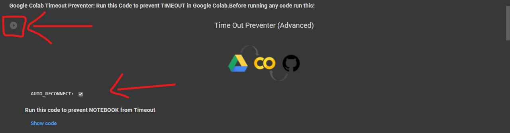
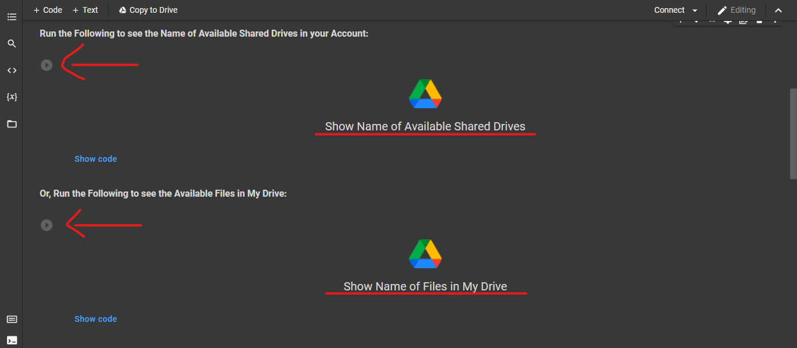
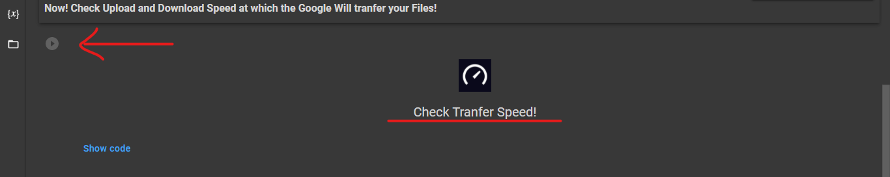
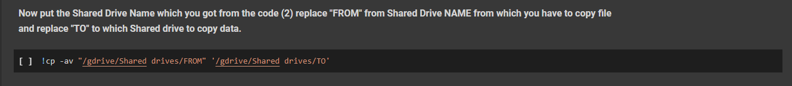
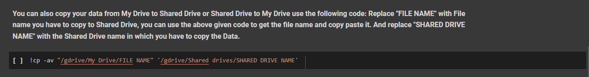
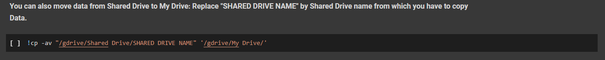

Google Drive Data Mover (UI Added!😊)
A Simple and User-Friendly Google Collab Notebook with UI to Move or Copy your Data from one place to another.
Following types of Movement is Supported:
1.Shared Drive to Shared Drive.
2.Shared Drive to My Drive.
3.My Drive to Shared Drive.
🆕What's New?🆕
Update log for v2.2.2
1.Auto Reconnector is added at place of Timeout Preventer!🤩
2.Fixed Two more Transfer Issues reported to me by my Users!😘
3.Useless Codes are deducted from Colab NoteBook.😁
Update log for v2.2.1
1.Added Time Out Preventer!😀
2.Fixed a Mounting Issue!😅
3.Added More Movement!😉
4.Integrated Speed Tester!😎
⚙️ How to Use ?
1.First Open the Code in Google Collab! Open Code
2.Before you do anything! Connect your Google Account. Click on the Dropdown arrow and select "MOUNT" and click "Play Code" button.

3.Now run the Timeout preventer to prevent Google Colab from getting Time out!

4.Now Run "Show Shared Drive Name" to see available Shared Drives is name in your account. Or you can Run "Show My Drive's Files Name" to get all names of files available in your My Drive.

5.You can also check the Speed from which your Data will be Copied.(Optional)

6.Now by using the Code as shown in the Following image you can transfer Data from One Shared Drive to Another Shared Drive, Just replace "FROM" with the Shared Drive Name from which you have to copy data and replace "TO" from the Shared Drive Name to which you have to copy data. You can copy & paste the Names from step 3.

7.Again! Using the code as shown in the following Image you can copy data from My Drive to Shared Drive, Just replace "FILE NAME" with File you have to copy from My Drive and replace "SHARED DRIVE NAME" with Shared Drive Name to which you have to copy data. Also if you like to copy all Data from My Drive at once then remove "FILE NAME" and directly Enter "SHARED DRIVE NAME" and hit "Play Code" Button.

8.Also! You can copy data from Shared Drive to My Drive using code as shown in the Image. Just replace "SHARED DRIVE NAME" from Shared Drive name from which you have to copy data and there is no need to do any changes in the destination.

❗NOTE: You can Copy Data of Max 750GB/Day because of limit set by Google! However you can use multiple accounts to bypass this limit.❗
〽️Variables Used
FROM: Replace with the Shared Drive Name from which you have to copy data.
TO: Replace from the Shared Drive Name to which you have to copy data.
FILE NAME: Replace with File you have to copy from My Drive.
SHARED DRIVE NAME: Replace with Shared Drive Name to which you have to copy data.
🔐 Safe or Not? ✅
Don't Worry! No data will be shared with anyone, if you use the Original code.🔒
This code do not share even a single piece of data to any third party source and not create any log of that!🔑
Do not trust any other copy of this Code.📚
🤔 Why Use This?
If you use Google Collab for Long term use, then you can understand that it requires Human Interaction atleast one time per 90 Minutes! Otherwise it will cancel the task and all your Work will got failed! But this Repository comes with the code which prevent this. Yes you heard it right just click on the "Play Code Button" and then don't worry about time out! Also sometimes it become defficult to upload Files directly to Shared Drives, So we have added a dedicated Shared Drive Section in the UI. We update every Repository on a regular Basis and fix Problems reported to us by our Users!
📥Download
You can also Download this GitHub Repository as (.zip) file.
Following Versions are available to download:
v2.2.2: Download Now
v2.2.1: Download Now
⛑Contact Us!
Don't Forget to view My Official Website: Check Out
Join our Update Channel at Telegram: Join Now!
Directly Contact the Developer using Telegram @HelpAutomatted_Bot
❤️Credits & Thanks
Dr.Caduceus: For making UI and Collab Notebook.